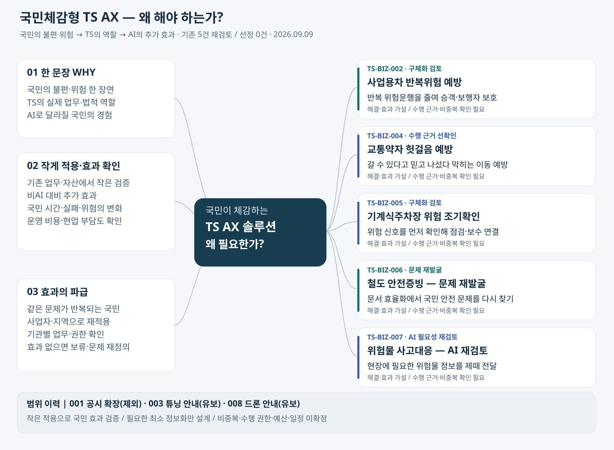
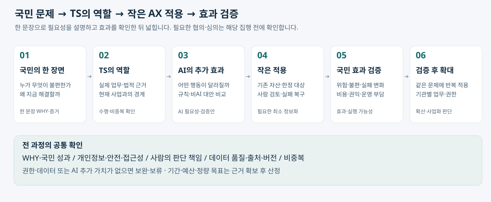

국민이 체감하는 TS AX 솔루션
추가 발굴: 말로 시작해 신청·예약까지 끝내는 TS 민원 AX
고령자에게는 전화 한 통으로 가능한 검사 일정을 찾고 예약까지 마치는 경험을 우선 설계한다. 짧게 묻고 천천히 안내하며, 문자 링크를 열지 않아도 진행할 수 있게 한다. 필요한 본인확인·동의 후 실제 완료를 확인하고, 어려우면 상담원에게 목적·조건·진행 상태를 이어준다. 전화 처리·본인확인·결제·인계 방식은 구현 전 확인 대상이다.
왜 필요한가: 어르신이 사이트와 메뉴를 몰라도 필요한 예약·신청을 끝낼 수 있게 한다. 원하는 일을 말하면 필요한 정보 확인·입력 준비를 돕고, 본인의 확인·동의를 거쳐 실제 처리와 완료 확인까지 연결하는 구상이다.
자동차검사 예약 한 업무를 첫 적용 예시로 검토한다. 사이트 전체를 바꾸는 대신 기존 업무의 허용된 조회·처리 기능을 활용한다. 고령자의 실제 처리 완료율·중도 포기·도움 요청을 현행 절차와 간소화한 비AI 화면에 비교한다. 기존 민원 과업의 실행 범위·본인확인·연계 방식은 미확정이며, 아래 기존 5건과 별도의 발굴 초안이다.
추가 현장 의견: 예약은 마감인데 현장은 여유로워 보이고, 예약 불가 정보의 반영·표시 때문에 예약이 더 어렵게 느껴진다는 사용자 경험을 기록했다. 목표는 해당 차량이 실제 예약할 수 있는 자리만 추천하고 취소 자리를 제때 연결하는 것이다. 반영 지연·예약/현장 배정 차이는 원인 가설이며 실제 기록으로 확인해야 한다. 잔여석 정확성은 기본 정비로 확보하고 AI는 조건 이해·대기 예측·적합한 선택 지원의 추가 효과를 검증한다.
누가 겪는 어떤 불편·위험을, TS의 어떤 업무에서 AI로 줄이는가?
기획 초안 v0.2 · 2026-09-09 사용자 추가 정정 반영. 기존 5건을 국민 체감·효율성·파급력으로 재검토했다. 구체화 검토 2건, 수행 근거 선확인 1건, 문제 또는 AI 필요성 재검토 2건이다. 모두 기획 판단이며 사업 선정·법적 수행 가능성의 확정이 아니다.
국민의 문제와 달라질 경험을 먼저 설명한다. 기존 업무·자산에서 작은 범위로 AI 효과를 확인하고 필요한 최소 정보화·연계만 뒤에서 설계한다. 전체 인프라 교체를 전제로 두지 않는다.
기획 범위와 중복배제 · 기존 사업 맥락 · 상세 포트폴리오
1. 마인드맵 — 무엇을 기획할 것인가
5개를 모두 추천하지 않는다. 국민 문제와 AI 역할이 약한 후보는 문제를 다시 찾는다. 파급력은 같은 문제를 겪는 국민·사업자·지역으로 해결책이 반복 적용될 수 있는지로 검증한다.


| 해결할 국민 문제 | 왜 해야 하는가 — 한 문장 | 이번 재검토 판단 |
|---|---|---|
| 사업용차 반복위험 예방 | 위험운전이 반복되는 운행에 먼저 개입해 승객과 보행자의 사고 위험을 줄이기 위해서입니다. | 구체화 검토 / 안전조치가 실제 반복 위험을 낮추는지 검증할 수 있다. 기존 위험분석·공시와의 차이 및 TS·사업자의 조치 권한은 확인이 필요하다. |
| 교통약자 헛걸음 예방 | 이용할 수 있다고 믿고 출발한 길에서 휠체어 이용자 등이 막혀 되돌아오는 일을 줄이기 위해서입니다. | 수행 근거 선확인 / 국민 편익은 명확하게 설명되지만 실제 수탁 범위·시설 상태 갱신 책임이 먼저 확인돼야 TS 사업으로 구체화할 수 있다. |
| 기계식주차장 위험 조기확인 | 기계식주차장의 위험 신호를 놓치지 않고 필요한 점검·보수를 앞당겨 이용자의 사고 위험을 줄이기 위해서입니다. | 구체화 검토 / 시설 이용자의 안전 문제로 좁힐 수 있다. 정보망·검사·관리자 조치의 실제 업무 경계와 검증 가능한 고장 이력이 필요하다. |
| 철도 안전증빙 — 문제 재발굴 | 현재의 증빙 검토·종결 추적 설명만으로는 국민에게 어떤 위험이 얼마나 줄어드는지 충분히 드러나지 않습니다. | 문제 재발굴 / 지금 구상은 내부 증빙·검토 관리가 중심이다. 실제 놓친 위험, TS가 할 수 있는 안전조치, 국민 영향이 확인되기 전 대표 국민체감형 사업으로 추천하지 않는다. |
| 위험물 사고대응 — AI 재검토 | 사고 현장에서 어떤 위험물인지 제때 알아 주민과 대응자의 피해를 줄이기 위해서입니다. | AI 필요성 재검토 / 국민 피해와 연결되지만 기존 구상의 핵심은 정보 전달·수신·기관 인계다. 일반 정보화·매뉴얼로 충분한지 먼저 판단해야 한다. |
2. 국민 문제에서 작은 적용과 효과 검증으로

| 단계 | 핵심 질문·완료 근거 | 다음 단계 진입 조건 |
|---|---|---|
| 국민의 한 장면 | 누가 어떤 불편·위험을 겪으며 왜 해결해야 하는지 한 문장 WHY와 현장 증거로 설명 | 국민 문제와 원인·규모가 확인됨. 기술·인프라 필요성을 문제로 대체하지 않음 |
| TS의 역할 | 해당 법정·수탁·대행 업무의 실제 수행 근거, 현재 추진사업과의 경계 | TS가 할 수 있는 일과 다른 기관·사업자의 역할, 계약상 비중복 검토 |
| AI 추가 효과 | AI가 바꿀 행동, 기존 규칙·비AI 대안과 비교할 성과·실패 비용 | 추가 효과를 검증할 근거·표본·판단 기준 확보. 필요 기술 검증은 사업 일부 |
| 작은 적용 | 기존 자산·한정 대상·위험 유형을 정하고 필요한 최소 정보화만 설계 | 사용 권한·사람 검토·현장 확인·실패 복구와 해당 집행 전 필요한 절차 확인 |
| 국민 효과 검증 | 위험·불편·실패 변화와 비용·권익·현업 운영 부담을 함께 비교 | 국민 효과와 실행 가능성의 증거 확보. 처리속도나 AI 정확도만으로 통과시키지 않음 |
| 검증 후 확대 | 같은 문제가 반복되는 이용자·사업자·지역에 재적용할 수 있는지 검토 | 기관별 업무·자료 제공·운영 책임과 효과를 별도 확인하고 재정·심의 적용 판단 |
기간은 조건 충족 여부에 따라 정한다. 개인정보 처리·보안 검토와 필요한 협의·심의는 본 구축 단계까지 미루지 않고, 자료 이용·실증·집행에 각각 적용되는 시점 전에 확인한다. 협의의 실제 적용 여부는 아래 기존 공식근거 문서에서 검토를 이어간다.
3. 사업별 기획 카드
현행 업무의 공백은 확인해야 할 가설이다. 아래 목표 업무·최소 실증·산출물·역할은 제안 설계이며 TS의 승인된 과업이나 확정 사업을 뜻하지 않는다. 사례는 기존 심층리서치의 확인 수준을 그대로 보존했다. 인접 분야·공급사 설명·과거 실증을 현재의 동일 업무 AI 도입 실적으로 바꾸지 않는다.
1. 사업용차 반복위험 예방
왜 해야 하는가: 위험운전이 반복되는 운행에 먼저 개입해 승객과 보행자의 사고 위험을 줄이기 위해서입니다.
TS-BIZ-002 · AX 전환 · 검토대상 / 비중복 미확정 / 선정 전
국민체감형 재검토: 구체화 검토 — 안전조치가 실제 반복 위험을 낮추는지 검증할 수 있다. 기존 위험분석·공시와의 차이 및 TS·사업자의 조치 권한은 확인이 필요하다.
| 국민 중심 기획 | 이번 구체화 |
|---|---|
| TS가 할 수 있는가 | 일부 법정 위탁 조문 검토 / 분석 목적, 운전자 정보 처리·보존·제공, 시·도와 운수사업자의 역할 및 실제 데이터 권한 확인 |
| AI가 바꿀 것 | 같은 위험 횟수라도 노선·운행량·시간대 등에 따라 우선 확인할 운행을 구별할 수 있는지 검증한다. 단순 점수·경보 추가는 제외한다. |
| 효율적인 작은 시작 | 허가된 기존 운행 자료에서 한 가지 반복 위험과 실행 가능한 조치 하나를 정해 규칙 기반 안전관리와 비교한다. |
| 국민이 체감할 효과 | 주행량을 보정한 반복 위험과 실제 조치 후 변화. 사고 감소는 별도 기간·표본으로 확인하기 전 성과로 단정하지 않는다. |
| 효과를 넓힐 경로 | 같은 위험·조치가 반복되는 운수사업자와 운행 유형으로 넓힐 수 있는지 확인한다. 운행 조건이 다르면 다시 검증한다. |
기존 원장 관리명: 사업용차 안전개입 AX 전환. 아래 이전 구현·조사 자료는 이번 판단에 맞춰 필요한 부분만 재사용한다. 재검토 후보의 구축 추진을 뜻하지 않는다.
기존 구현 가설·법령·국내외 사례 자세히 보기
한 장면으로 보는 서비스: 안전관리자가 반복 위험 신호의 근거를 확인하고 교육·조치를 배정한다. 담당자가 이행을 기록하면 운행 노출량을 보정해 이후 변화와 이의제기까지 확인한다.
| 기획 항목 | 구상·근거·확인 조건 |
|---|---|
| 문제정의와 메가이슈 | 교통사고 예방와 연결한 가설: 사업용차 안전관리에서 위험행동을 많이 검출해도 운전자·운수사업자가 실행할 수 있는 예방 조치로 연결되지 않으면 국민 안전 편익이 생기지 않는다. 기존 eTAS 분석과 중복되는 탐지 기능보다 조건에 맞는 개입의 질을 확인한다. |
| 국민·현업 | 수혜자: 사업용차 운전자·승객·보행자와 도로 이용자 / 업무 참여자: 승객·도로 이용자, 운전자·안전관리자·교육 담당자 |
| WHY — 공공 가치·TS·지금 | 국민 가치: 도로 이용자의 생명·안전 보호 / TS 관련성: 교통수단 점검과 운행기록 분석 관련 위탁 조문을 확인 / 시급성 검증: 사고 통계·현행 분석체계의 잔여 위험을 대조해 시급성을 판단 |
| 현행 가설 → 목표 업무 | 분석 결과와 교육·안전조치 이행이 분리돼 있는지 확인 → 위험 신호→담당 검토→안전조치 배정→이행·결과 확인 |
| 디지털전환·데이터 | 차량·운행·조치 ID, 노선·운행량과 조치 결과 정합성 / 필요한 표본: 허가된 DTG·차량·노선·시간·교육·조치·사고 또는 준사고 기록, 품질·누락·동의와 법적 근거 |
| AI의 역할 | 상황별 이상·위험 신호 탐지와 검토용 설명 / 채택 근거: 규칙으로 포착하지 못하는 패턴에 추가 효과가 있을 때만 채택 |
| 정보화 구축·연계 | 운행기록 품질·권한 관리, 위험 신호 전달, 담당자 검토·교육 연계, 조치 이력·성과 모니터링 |
| 비AI 비교·반대 가설 | 기존 위험운전 규칙·통계 점검·안전교육 / 위험행동 차이가 데이터 누락이나 운행조건 차이이고 교육·휴식 조정만으로 해결된다면 AI 예측을 추가할 이유가 약해진다. |
| 최소 실증 | 사용권이 확인된 과거 운행·조치 이력에서 규칙과 AI를 같은 조건으로 비교한다. 유효성이 확인되면 제한된 사업자에서 관찰 평가 후 사람 검토를 거친 조치 연계를 시험한다. |
| 국민 성과·측정 단위 | 노출량을 보정한 반복 위험행동 및 실제 안전조치 완료율 / 단위: 차량-운행 또는 사업자-기간, 주행거리·운행시간 노출량 / 기준선·표본·정량 목표는 미정 |
| 실패·권익 지표 | 오경보·미탐·경보 피로·운전자 이의제기와 집단별 차이 |
| 수행·운영 역할안 | TS 해당 업무부서의 적법한 사업책임 범위를 확인하고, 운수사업자의 안전관리자·교육 담당자·운전자가 검토·이행·이의제기 역할을 협의한다. |
| 조직 영향 | 운전자·현업을 단순 점수로 서열화하거나 인력 감축 지표로 전용하지 않는다. 안전교육·예외 검토·이의제기 책임 유지 |
| 계약상 경계 | 전세버스 공시 산출물과 구분한 운행위험→교육·안전조치→이행 확인 업무를 검토한다. 최종 계약·승인 요구사항과 실제 시스템의 대조가 필요하다. 제외 기능: 기존 eTAS 분석·전세버스 등급 산정·공시 보고서 생성 |
| 착수에 필요한 근거 | 승인된 진행사업 요구사항·eTAS 실제 기능 목록과 비교한 비중복표, 허가된 운행-교육-조치 연결 표본, 현재 경보·조치 규칙 |
| 중단·보류 기준 | 현행 기능과 실질적으로 중복하거나 개입 주체·데이터 사용권을 확보하지 못하면 착수하지 않는다. 교육·운영 개선만으로 같은 성과가 나면 AI 도입을 보류한다. |
구축·검수 산출물
- 운행·위험·교육·조치 연결 명세
- 규칙 대비 AI 평가와 운전자 영향 기록
- 안전관리자 검토·배정·이행 확인 흐름
- 노출량 보정 성과·이의제기 보고서
비용 산정 입력: 운행 기록량·연계 시스템 수·보존기간·모델 평가량·참여 사업자와 교육 운영 범위. 구축비와 운영비를 나누고 기존 자산 재사용 비용, 데이터 정비·연계, 검증·보안·접근성, 교육·인수, 지속 평가·유지관리 비용을 포함한다. 금액·재원·공고·사업기간은 미확정이다.
기관·법령 연결과 확장 조건
일부 법정 위탁 조문 검토 / 적용 판단의 남은 범위: 분석 목적, 운전자 정보 처리·보존·제공, 시·도와 운수사업자의 역할 및 실제 데이터 권한 확인
D_TS_03 — 교통안전법 시행령 제48조의2(업무의 위탁) (법정 위탁)
D_TS_04 — 교통안전법 시행령 제48조의2(업무의 위탁) (법정 위탁)
| 확장 검토기관 | 재사용·연계 가설 | 확인 조건 |
|---|---|---|
| 한국도로교통공단 | 교통안전 분석·교육 협업 검토 | 양 기관의 법정 업무 경계와 실제 협업 근거 확인 |
| 서울교통공사 | 운행위험 분석의 검증·운영 패턴 | 철도와 도로의 데이터·위험 정의·안전기준 차이를 재설계 |
기관명은 기존 관계원장의 기준시점 정보를 사용했다. 참여·협약·예산·데이터 공유 권한은 확인되지 않았다. 범정부 확장은 기관별 업무·권한 검증 후 공통 구조를 재사용한다는 구상이다.
국내외 도입·운영·솔루션 사례
| 사례 | 확인 단계·시점 | AI 증거 | 적용 판단 |
|---|---|---|---|
| 대한민국 / eTAS 운행기록 분석 | 공식 서비스 안내·검색/수집 응답 불일치 / 2026-09-09 공개 응답 대조·현재 기능 미검증 | AI 확인 안 됨 | 기존 위험운전 분석에 없는 개입 효과를 먼저 찾고 실제 데이터 접근부터 확인한다. |
| 싱가포르 / LTA 버스 안전기술·근무환경 개선 | 운영 개선·구매 및 확대 계획 / 2025-08-23 발표 | AI 충돌경고 명시 | 경보만 추가하지 않고 운전자 교육·근무조건·차량특성을 함께 설계한다. |
위 사례의 독립적 효과 검증은 확인되지 않았다. 사례 수치를 TS의 목표·예상 편익으로 사용하지 않는다.
CASE-003 근거·한계 · CASE-004 근거·한계
SOL-03 운행위험 신호·개입 지원 · SOL-07 공통 근거·권한·평가 관리
P01~P07 검토와 다음 확인
| 기준 | 이 구상에서의 반영 | 충족 상태 |
|---|---|---|
| P01 국민 중심 | 사업용차 운전자·승객·보행자와 도로 이용자의 안전·편익을 성과로 검증 | 설계 반영 / 수요·효과 미검증 |
| P02 인력 영향 | 운전자·현업을 단순 점수로 서열화하거나 인력 감축 지표로 전용하지 않는다. 안전교육·예외 검토·이의제기 책임 유지 | 검토 항목 반영 / 현업 협의 전 |
| P03 AX+SI | 상황별 위험 신호·근거 설명 + 운행·교육·조치 이력 연결; 비AI 대안과 비교 | 구상 / 추가 가치 미검증 |
| P04 메가이슈 | 교통사고 예방 → 위험 신호가 예방 조치로 이어지는가 | 가설 / 규모·원인 검증 필요 |
| P05 범정부 확장 | 위 확장기관별 업무·데이터·권한 차이를 재검증 | 구상 / 참여 미확정 |
| P06 법정업무 | D_TS_03 · D_TS_04; 분석 목적, 운전자 정보 처리·보존·제공, 시·도와 운수사업자의 역할 및 실제 데이터 권한 확인 | 일부 조문 검토 / 적용 미완료 |
| P07 WHY·재정 | 안전, 운전자 권익, 근거 기반 현장 조치를 성과·실패 지표와 비용 산정 입력으로 연결 | 설계 반영 / 편익·재원·심의 적용 미확정 |
2. 교통약자 헛걸음 예방
왜 해야 하는가: 이용할 수 있다고 믿고 출발한 길에서 휠체어 이용자 등이 막혀 되돌아오는 일을 줄이기 위해서입니다.
TS-BIZ-004 · 디지털전환+AI+정보화 · 검토대상 / 비중복 미확정 / 선정 전
국민체감형 재검토: 수행 근거 선확인 — 국민 편익은 명확하게 설명되지만 실제 수탁 범위·시설 상태 갱신 책임이 먼저 확인돼야 TS 사업으로 구체화할 수 있다.
| 국민 중심 기획 | 이번 구체화 |
|---|---|
| TS가 할 수 있는가 | 위탁 가능규정 · 실제 위탁 고시 확인 필요 / 교통약자 조사·정보체계의 실제 수탁기관·범위·고시, 지자체·운영기관의 데이터 제공 근거 확인 |
| AI가 바꿀 것 | 서로 다른 시설 상태·관측시각·오류 제보에서 이용 가능 정보의 모순을 찾아 담당자가 확인하도록 돕는다. 최신성 관리만으로 충분하면 AI를 추가하지 않는다. |
| 효율적인 작은 시작 | 실제 수행·자료 제공 근거가 확인된 한정 구간에서 기존 이동 지원 서비스를 활용해 정보 불일치와 이용 실패를 검증한다. |
| 국민이 체감할 효과 | 필요한 지원을 포함한 실제 이동 완료·되돌아옴·잘못된 이용 가능 안내. 단순 등록 시설 수를 성과로 삼지 않는다. |
| 효과를 넓힐 경로 | 동일한 접근성 정보 오류가 반복되는 시설·노선에 적용할 수 있는지 확인한다. 새 전국 길찾기 서비스로 확대하지 않는다. |
기존 원장 관리명: 교통약자 이동정보 신뢰·연계 정보화. 아래 이전 구현·조사 자료는 이번 판단에 맞춰 필요한 부분만 재사용한다. 재검토 후보의 구축 추진을 뜻하지 않는다.
기존 구현 가설·법령·국내외 사례 자세히 보기
한 장면으로 보는 서비스: 시설 담당자가 상태·확인시각을 갱신하고 불일치 후보를 확인한다. 검증된 정보를 기존 이동 지원 서비스로 전달하며, 이용 실패 신고는 담당자 확인과 정보 정정으로 되돌아온다.
| 기획 항목 | 구상·근거·확인 조건 |
|---|---|
| 문제정의와 메가이슈 | 고령화·이동 접근성와 연결한 가설: 교통약자는 경로에 편의시설이 표시돼도 실제 사용 가능 상태·접근 조건·연결 구간이 다르면 이동에 실패할 수 있다. 전국 인구 규모와 도 지역 시설 실태는 맥락이며, 구체적 서비스 과제는 정보와 현장 상태의 불일치를 줄이는 것으로 정의한다. |
| 국민·현업 | 수혜자: 고령자·장애인·임산부·동반 보호자 등 이동 지원이 필요한 국민 / 업무 참여자: 휠체어 이용자·시각약자·고령자·보호자, 시설관리자·운영사·지자체 |
| WHY — 공공 가치·TS·지금 | 국민 가치: 이동 접근의 불평등과 정보 격차 검증·완화 / TS 관련성: 가능규정의 실제 위탁과 통합정보 업무 범위 확인이 선행 / 시급성 검증: 고령화·접근성 문제의 공식 통계와 현장 수요를 연결해 판단 |
| 현행 가설 → 목표 업무 | 시설·운행 정보와 실제 사용 상태·갱신 책임이 분리돼 있는지 확인 → 시설 상태·시각·책임자→불일치 확인→갱신→이동 지원·오류 회수 |
| 디지털전환·데이터 | 시설·출입구 ID, 접근 조건·관측시각·갱신 책임과 품질 기준 / 필요한 표본: 시설·출입구·승강기 ID와 상태, 관측시각, 갱신 책임, 접근성 조건, 허가된 실제 이용 평가 |
| AI의 역할 | 정보 불일치·변경 신호 탐지와 이용 조건에 맞는 설명 / 채택 근거: 정보 정비만으로 해결되지 않는 불일치 탐지의 추가 편익 검증 |
| 정보화 구축·연계 | 시설·서비스 정보 표준화, 갱신 책임, 교통정보 연계, 접근성 화면·상담 대체 경로 |
| 비AI 비교·반대 가설 | 검증된 시설 목록·조건 검색·전화 확인·갱신 알림 / 오류의 주원인이 물리적 시설 미설치나 운행 공급 부족이면 앱·AI 개선만으로 해결할 수 없다. |
| 최소 실증 | 실제 수탁과 제공 권한이 확인된 제한 지역·시설을 정하고 당사자와 현장 정보를 대조한다. 검증된 목록·수동 갱신과 AI 불일치 탐지를 비교하고 실제 이동 성공·실패를 관찰한다. |
| 국민 성과·측정 단위 | 필요한 지원을 포함해 계획한 구간을 실제 완료한 비율과 실패 후 대체 경로 연결 / 단위: 이동구간·환승·시설 상태 관측과 동행 과제 / 기준선·표본·정량 목표는 미정 |
| 실패·권익 지표 | 통행 불가 경로의 가능 오표시, 정보 지연, 장애 유형별 실패율·지원 부담 |
| 수행·운영 역할안 | TS의 실제 수탁 범위를 먼저 확인한다. 지자체·시설/교통 운영기관은 갱신·현장 확인 책임을 협의하고, 당사자·보호자는 이용 평가에 참여하는 구상이다. |
| 조직 영향 | 정보 갱신·현장 확인·지원 상담의 역할과 부담을 명확히 하고 현업·이용자 검증을 선행 |
| 계약상 경계 | 시설·출입구 상태, 갱신 책임, 오류 회수와 실제 이동 지원을 연결하는 전환사업으로 검토한다. 최종 계약·승인 요구사항과 실제 시스템의 대조가 필요하다. 제외 기능: 새 전국 길찾기 앱·일반 민원 챗봇·기존 플랫폼 고도화 |
| 착수에 필요한 근거 | 실제 위탁 고시·범위, 시설 정보와 현장의 불일치 표본, 갱신 책임자·기존 서비스 연계 가능성, 당사자 요구 |
| 중단·보류 기준 | TS 수행 근거·갱신 책임을 확보하지 못하면 유보한다. 물리적 접근 장애·운행 공급 부족을 정보 또는 AI 문제로 바꾸어 제안하지 않는다. |
구축·검수 산출물
- 시설·출입구 상태와 갱신 책임 데이터 표준
- 정보 정정·회수 및 기존 서비스 연계 명세
- 접근 가능한 상태 조회·지원 흐름
- 당사자 참여 이동 과제 평가와 실패 사례집
비용 산정 입력: 시설·출입구 수·정보 갱신 빈도·연계 운영기관 수·현장 조사와 당사자 검증·접근성 시험 범위. 구축비와 운영비를 나누고 기존 자산 재사용 비용, 데이터 정비·연계, 검증·보안·접근성, 교육·인수, 지속 평가·유지관리 비용을 포함한다. 금액·재원·공고·사업기간은 미확정이다.
기관·법령 연결과 확장 조건
위탁 가능규정 · 실제 위탁 고시 확인 필요 / 적용 판단의 남은 범위: 교통약자 조사·정보체계의 실제 수탁기관·범위·고시, 지자체·운영기관의 데이터 제공 근거 확인
D_TS_14 — 교통약자의 이동편의 증진법 시행령 제21조의3(권한의 위임 또는 위탁) (위탁 대상 자격)
D_TS_12 — 대중교통의 육성 및 이용촉진에 관한 법률 시행령 제11조의9(통합정보시스템 구축ㆍ운영 업무의 위탁) (법정 위탁)
| 확장 검토기관 | 재사용·연계 가설 | 확인 조건 |
|---|---|---|
| 한국교통연구원 | 교통약자 조사·정책 연구 협업 가설 | 실제 지정·수탁 및 공동연구 범위 확인 |
| 서울교통공사 | 교통시설 접근성 정보 연계 | 운영기관의 제공 책임·실시간성·현장 검증을 별도 협의 |
기관명은 기존 관계원장의 기준시점 정보를 사용했다. 참여·협약·예산·데이터 공유 권한은 확인되지 않았다. 범정부 확장은 기관별 업무·권한 검증 후 공통 구조를 재사용한다는 구상이다.
국내외 도입·운영·솔루션 사례
| 사례 | 확인 단계·시점 | AI 증거 | 적용 판단 |
|---|---|---|---|
| 대한민국 / 서울동행맵 | 정식 출시 발표 / 2024-11-01 서비스 시작 발표 | 해당 자료에서 AI 확인 안 됨 | 새 길찾기 앱보다 시설정보의 정확성·갱신 책임과 기존 앱 연계를 검증한다. |
| 싱가포르 / MAVIS 이동 지원 | 과거 실증·확대 계획 / 2019년 1차 실증·2020년 후속 발표 | AI 확인 안 됨 | 이용자 화면과 버스기사의 지원 행동을 함께 검증한다. 현재 전면 운영 근거로 쓰지 않는다. |
위 사례의 독립적 효과 검증은 확인되지 않았다. 사례 수치를 TS의 목표·예상 편익으로 사용하지 않는다.
CASE-007 근거·한계 · CASE-008 근거·한계
SOL-04 이동정보 신뢰·접근성 · SOL-07 공통 근거·권한·평가 관리
P01~P07 검토와 다음 확인
| 기준 | 이 구상에서의 반영 | 충족 상태 |
|---|---|---|
| P01 국민 중심 | 고령자·장애인·임산부·동반 보호자 등 이동 지원이 필요한 국민의 안전·편익을 성과로 검증 | 설계 반영 / 수요·효과 미검증 |
| P02 인력 영향 | 정보 갱신·현장 확인·지원 상담의 역할과 부담을 명확히 하고 현업·이용자 검증을 선행 | 검토 항목 반영 / 현업 협의 전 |
| P03 AX+SI | 불일치·변경 신호와 조건 설명 + 시설 ID·갱신 책임·기존 서비스 연계; 비AI 대안과 비교 | 구상 / 추가 가치 미검증 |
| P04 메가이슈 | 고령화·이동 접근성 → 정보상 이용 가능과 현장이 일치하는가 | 가설 / 규모·원인 검증 필요 |
| P05 범정부 확장 | 위 확장기관별 업무·데이터·권한 차이를 재검증 | 구상 / 참여 미확정 |
| P06 법정업무 | D_TS_14 · D_TS_12; 교통약자 조사·정보체계의 실제 수탁기관·범위·고시, 지자체·운영기관의 데이터 제공 근거 확인 | 일부 조문 검토 / 적용 미완료 |
| P07 WHY·재정 | 포용성, 자율적 이동, 접근성과 책임를 성과·실패 지표와 비용 산정 입력으로 연결 | 설계 반영 / 편익·재원·심의 적용 미확정 |
3. 기계식주차장 위험 조기확인
왜 해야 하는가: 기계식주차장의 위험 신호를 놓치지 않고 필요한 점검·보수를 앞당겨 이용자의 사고 위험을 줄이기 위해서입니다.
TS-BIZ-005 · 디지털전환+AI+정보화 · 검토대상 / 비중복 미확정 / 선정 전
국민체감형 재검토: 구체화 검토 — 시설 이용자의 안전 문제로 좁힐 수 있다. 정보망·검사·관리자 조치의 실제 업무 경계와 검증 가능한 고장 이력이 필요하다.
| 국민 중심 기획 | 이번 구체화 |
|---|---|
| TS가 할 수 있는가 | 정보망 위탁 조문 검토 · 예방·검사 업무 추가 확인 / 정보망 운영 근거와 검사·사고조사·관리자의 조치 권한을 구별. 데이터 공개·센서 접근·안내 책임 확인 |
| AI가 바꿀 것 | 점검·고장·보수 기록의 조합에서 추가 확인이 필요한 설비를 기존 점검 규칙보다 유효하게 찾는지 검증한다. 장비 제어·합격 자동 판정은 하지 않는다. |
| 효율적인 작은 시작 | 사용 가능한 기존 설비 이력으로 특정 결함 유형 하나를 정하고 현장 확인을 통해 유효 신호와 불필요 출동을 비교한다. |
| 국민이 체감할 효과 | 유효한 위험 사전 확인과 보수 완료, 미조치 위험·불필요 출동. 사고를 예방했다는 인과적 성과는 별도 검증한다. |
| 효과를 넓힐 경로 | 같은 결함 유형의 설비·관리 현장에 반복 적용 가능한지 검증한다. 제조사·형식이 다르면 전이 효과를 다시 확인한다. |
기존 원장 관리명: 기계식주차장 생애주기 안전관리 정보화. 아래 이전 구현·조사 자료는 이번 판단에 맞춰 필요한 부분만 재사용한다. 재검토 후보의 구축 추진을 뜻하지 않는다.
기존 구현 가설·법령·국내외 사례 자세히 보기
한 장면으로 보는 서비스: 관리자가 설비별 검사·고장·보수 이력을 확인한다. AI의 검토 후보를 전문가가 판단하고 보수를 요청한 뒤, 완료 증빙과 재점검 결과로 미조치 상태를 종결한다.
| 기획 항목 | 구상·근거·확인 조건 |
|---|---|
| 문제정의와 메가이슈 | 생활시설 안전와 연결한 가설: 기계식주차장 관리자·이용자가 설비 상태와 점검·조치 이력을 일관되게 확인하지 못하면 필요한 점검이나 안전조치가 지연될 수 있다. 법정검사와 제조사 유지보수는 이미 존재하므로 그 사이의 정보·책임 단절을 검증한다. |
| 국민·현업 | 수혜자: 주차장 이용자·시설 관리자·주변 보행자 / 업무 참여자: 주차장 이용자·관리자·설치자, 제조사·보수업체·검사자 |
| WHY — 공공 가치·TS·지금 | 국민 가치: 생활시설 이용자의 안전과 알 권리 / TS 관련성: 기계식주차장 정보망 구축·운영 위탁 근거 확인 / 시급성 검증: 시설 사고·고장 통계와 기존 관리체계의 공백으로 판단 |
| 현행 가설 → 목표 업무 | 설비·검사·보수 이력과 미조치 상태가 단절돼 있는지 확인 → 설비 이력→결함·위험 검토→보수 조치→종결 확인·재점검 |
| 디지털전환·데이터 | 설비·검사·정비·조치 ID와 제조사별 이력 표준화 / 필요한 표본: 설비 ID·형식·연령·검사·보수·사고·조치 이력, 허가된 센서 자료와 현장 확인 |
| AI의 역할 | 고장·점검 기록의 패턴 탐색과 확인 우선순위 지원 / 채택 근거: 희귀 패턴에서 규칙 대비 이익이 있는지 검증 |
| 정보화 구축·연계 | 정보망·점검 이력 품질, 시설 식별, 관리자 확인·알림, 국민 안전정보·변경 이력 |
| 비AI 비교·반대 가설 | 정기 점검·규칙 경고·최신 시설 정보 제공 / 고장·사고 원인이 사용수칙 미준수 또는 물리 안전장치 부족이라면 AI보다 장치 개선·교육·점검이 우선이다. |
| 최소 실증 | 식별 가능한 허가된 설비 이력과 현장 확인 결과를 대조한다. 설비·제조사·현장을 나누어 기존 규칙과 비교하며 장비 제어 없이 관리자 관찰 평가를 수행한다. 센서 확보를 전제하지 않는다. |
| 국민 성과·측정 단위 | 유효 결함의 사전 확인과 보수 조치 완료까지 걸린 시간 / 단위: 설비-기간·결함·보수 조치 단위 / 기준선·표본·정량 목표는 미정 |
| 실패·권익 지표 | 미탐·불필요 출동·관리자 경보 피로·미조치 고위험 건 |
| 수행·운영 역할안 | TS의 정보망·검사·사고 관련 업무 권한을 구별한다. 관리자·제조사·보수업체·검사자의 판단과 조치 책임을 각각 협의한다. |
| 조직 영향 | 관리자·검사자의 전문 판단과 현장 확인을 강화하고 업무 부담·조치 책임을 함께 평가 |
| 계약상 경계 | 설비·검사·보수·조치 이력을 연결하고 위험 검토와 이행 확인을 정보화한다. 최종 계약·승인 요구사항과 실제 시스템의 대조가 필요하다. 제외 기능: 일반 자동차검사 업무 AI·문서 챗봇·장비 제어·검사 합격 자동 판정 |
| 착수에 필요한 근거 | 기존 정보망 기능·계약 범위, 설비별 검사-보수-미조치 표본, 사고·고장 분모와 이력 품질, 관리자 조치 책임 |
| 중단·보류 기준 | 기존 정보망과 중복이 해소되지 않으면 범위를 재설계한다. 데이터가 희소·불일치해 검증이 불가능하거나 안전장치 개선이 원인 해소책이면 AI 추진을 보류한다. |
구축·검수 산출물
- 설비-검사-보수-조치 이력 모델
- 규칙·AI 확인 후보의 현장 검증 결과
- 관리자 확인·보수·종결 관리 흐름
- 미조치·오경보·불필요 출동 평가 보고서
비용 산정 입력: 설비·제조사 수·이력 정비량·기존 정보망 연계 수·현장 확인·보수 이행 추적 범위. 구축비와 운영비를 나누고 기존 자산 재사용 비용, 데이터 정비·연계, 검증·보안·접근성, 교육·인수, 지속 평가·유지관리 비용을 포함한다. 금액·재원·공고·사업기간은 미확정이다.
기관·법령 연결과 확장 조건
정보망 위탁 조문 검토 · 예방·검사 업무 추가 확인 / 적용 판단의 남은 범위: 정보망 운영 근거와 검사·사고조사·관리자의 조치 권한을 구별. 데이터 공개·센서 접근·안내 책임 확인
D_TS_11 — 주차장법 시행령 제12조의11(기계식주차장 정보망의 구축ㆍ운영 업무의 위탁) (법정 위탁)
| 확장 검토기관 | 재사용·연계 가설 | 확인 조건 |
|---|---|---|
| 한국산업안전보건공단 | 시설 점검·증빙 검토 패턴 | 시설 종류·검사 권한·고장 정의를 새로 검증 |
기관명은 기존 관계원장의 기준시점 정보를 사용했다. 참여·협약·예산·데이터 공유 권한은 확인되지 않았다. 범정부 확장은 기관별 업무·권한 검증 후 공통 구조를 재사용한다는 구상이다.
국내외 도입·운영·솔루션 사례
| 사례 | 확인 단계·시점 | AI 증거 | 적용 판단 |
|---|---|---|---|
| 대한민국 / 기계식주차장 검사·관리시스템 안내 | 공식 업무·서비스 안내 / 2026-09-09 안내 확인 | AI 확인 안 됨 | 정보망·검사·관리자 조치를 각각 구별하고 기존 이력 품질부터 확인한다. |
| 일본계 공급사·현장국가 미확인 / IHI 기계식주차설비 예방보전·원격감시 | 공급사 서비스 설명 / 게시일·실명 도입일 미확인 | AI 확인 안 됨 | 예방보전 서비스는 비교 대안이다. 실명 고객·설치 규모·성과가 추가로 필요하다. |
| 일본계 공급사·현장국가 미확인 / 미쓰비시 주차설비 원격감시·갱신 | 공급사 기능 설명 / 게시일·실명 도입일 미확인 | AI 확인 안 됨 | 노후화·안전센서·이상통보를 비교하되 예지 AI 성과로 표시하지 않는다. |
| 영국 / Network Rail Insight | 운영기관 사용 설명 / 2023-12-22 발표 | AI 예측 활용 명시 | 센서 데이터의 예측과 전문인력의 정비 판단을 구분해 증빙 검토에 필요한 인터페이스만 검토한다. |
위 사례의 독립적 효과 검증은 확인되지 않았다. 사례 수치를 TS의 목표·예상 편익으로 사용하지 않는다.
CASE-009 근거·한계 · CASE-010 근거·한계 · CASE-011 근거·한계 · CASE-014 근거·한계
SOL-05 시설 이력·예방보전 지원 · SOL-07 공통 근거·권한·평가 관리
P01~P07 검토와 다음 확인
| 기준 | 이 구상에서의 반영 | 충족 상태 |
|---|---|---|
| P01 국민 중심 | 주차장 이용자·시설 관리자·주변 보행자의 안전·편익을 성과로 검증 | 설계 반영 / 수요·효과 미검증 |
| P02 인력 영향 | 관리자·검사자의 전문 판단과 현장 확인을 강화하고 업무 부담·조치 책임을 함께 평가 | 검토 항목 반영 / 현업 협의 전 |
| P03 AX+SI | 고장 패턴·사전 확인 우선순위 + 설비·검사·보수·미조치 이력 연결; 비AI 대안과 비교 | 구상 / 추가 가치 미검증 |
| P04 메가이슈 | 생활시설 안전 → 점검·고장 이력이 보수 종결까지 이어지는가 | 가설 / 규모·원인 검증 필요 |
| P05 범정부 확장 | 위 확장기관별 업무·데이터·권한 차이를 재검증 | 구상 / 참여 미확정 |
| P06 법정업무 | D_TS_11; 정보망 운영 근거와 검사·사고조사·관리자의 조치 권한을 구별. 데이터 공개·센서 접근·안내 책임 확인 | 일부 조문 검토 / 적용 미완료 |
| P07 WHY·재정 | 안전, 정확한 안내, 현장 책임를 성과·실패 지표와 비용 산정 입력으로 연결 | 설계 반영 / 편익·재원·심의 적용 미확정 |
4. 철도 안전증빙 — 문제 재발굴
왜 해야 하는가: 현재의 증빙 검토·종결 추적 설명만으로는 국민에게 어떤 위험이 얼마나 줄어드는지 충분히 드러나지 않습니다.
TS-BIZ-006 · AX 전환 · 검토대상 / 비중복 미확정 / 선정 전
국민체감형 재검토: 문제 재발굴 — 지금 구상은 내부 증빙·검토 관리가 중심이다. 실제 놓친 위험, TS가 할 수 있는 안전조치, 국민 영향이 확인되기 전 대표 국민체감형 사업으로 추천하지 않는다.
| 국민 중심 기획 | 이번 구체화 |
|---|---|
| TS가 할 수 있는가 | 일부 법정 위탁 조문 검토 / TS·한국철도기술연구원·국가철도공단의 위탁 범위, 운영기관 책임, 안전정보 접근과 공개 범위 구별 |
| AI가 바꿀 것 | 실제 안전상 중요한 누락·충돌과 이후 조치의 관계가 확인된 뒤 AI 검토가 비AI 대안보다 개선하는 부분을 정한다. |
| 효율적인 작은 시작 | 새 시스템 설계보다 실제 위험 누락·시정조치 사례를 TS 업무 범위 안에서 먼저 조사한다. |
| 국민이 체감할 효과 | 현재 미정. 문서 검토시간을 국민 안전 성과로 대체하지 않는다. |
| 효과를 넓힐 경로 | 국민 안전 효과와 반복되는 문제가 확인되기 전 확산 가설을 강조하지 않는다. |
기존 원장 관리명: 철도 안전증빙·시정조치 AX 전환. 아래 이전 구현·조사 자료는 이번 판단에 맞춰 필요한 부분만 재사용한다. 재검토 후보의 구축 추진을 뜻하지 않는다.
기존 구현 가설·법령·국내외 사례 자세히 보기
한 장면으로 보는 서비스: 검사자가 적용 시점의 요건과 제출 증빙을 연결한다. AI가 제시한 불일치와 원문 근거를 검토해 보완을 배정하고 현장 조치 증빙으로 종결 여부를 판단한다.
| 기획 항목 | 구상·근거·확인 조건 |
|---|---|
| 문제정의와 메가이슈 | 대규모 운송 안전와 연결한 가설: 철도 안전체계 검토에서 규정·운영절차·점검기록·변경조치의 버전과 관계가 어긋나면 안전상 중요한 누락이나 모순을 확인하기 어려울 수 있다. TS 검토 업무와 운영기관의 예측정비를 구분한 뒤 증빙 추적을 기획한다. |
| 국민·현업 | 수혜자: 철도 이용자·현장 종사자·시설 주변 국민 / 업무 참여자: 철도 이용자, TS 검사자·안전전문가·철도운영기관 문서 및 현장 담당자 |
| WHY — 공공 가치·TS·지금 | 국민 가치: 다수 이용자와 현장 종사자의 안전 보호 / TS 관련성: 철도 안전체계 검사·정보체계 등의 위탁 범위를 조사 / 시급성 검증: 현재 안전검토 자료·사건·현업 문제를 확인해 판단 |
| 현행 가설 → 목표 업무 | 안전요건·제출 증빙과 실제 시정조치의 버전·종결이 분리돼 있는지 확인 → 요건·증빙 연결→누락·충돌 검토→보완 배정→현장조치·종결 추적 |
| 디지털전환·데이터 | 요건·증빙·검사·시정조치 ID, 적용시점·버전·승인 기록 / 필요한 표본: 허가된 안전 요건·절차·점검·보완·변경 증빙, 전문가 정답 및 이견 기록 |
| AI의 역할 | 증빙 추출·불일치 탐지·검토 근거 제시 / 채택 근거: 다양한 증빙을 대조하는 추가 효과를 입증하는 경우 채택 |
| 정보화 구축·연계 | 증빙·기준 버전, 안전정보 연계, 검토·보완·조치 기록, 권한·감사·운영 인수 |
| 비AI 비교·반대 가설 | 구조화 제출·체크리스트·규칙 검증·전문가 검토 / 표준 제출 양식과 규칙 검증으로 대부분 해결된다면 대규모 모델보다 SI 정비를 먼저 선택한다. |
| 최소 실증 | 허가된 과거 비식별 검토 자료에 전문가 판독과 이견을 기록한다. 구조화 양식·규칙 체크리스트와 AI를 비교하고 현행 검토에 영향을 주지 않는 병행 관찰 평가를 수행한다. |
| 국민 성과·측정 단위 | 중대한 누락·모순 발견과 보완 종결의 정확성·재현성 / 단위: 요건-증빙 연결·검토 과제·운영기관 / 기준선·표본·정량 목표는 미정 |
| 실패·권익 지표 | 허위 증빙 생성·잘못된 인용·중요 누락·전문가 과신 |
| 수행·운영 역할안 | TS 검사·검토 담당자의 위탁 범위, 운영기관의 현장 조치 책임, 연구·시설 기관의 별도 권한을 구별한다. 승인·종결 책임자는 기존 권한 체계에서 확인한다. |
| 조직 영향 | 전문가 검토·예외 판단·안전 조치에 집중하도록 설계하고 실제 부담과 수용성을 확인 |
| 계약상 경계 | 일반 문서 질의응답과 구분해 요건·증빙·현장 조치·보완 종결을 연결하는 업무 AX로 검토한다. 최종 계약·승인 요구사항과 실제 시스템의 대조가 필요하다. 제외 기능: 범용 RAG·직원 문서 질의응답·공통플랫폼 재구축·운영기관 검측망 |
| 착수에 필요한 근거 | 현재 승인 요구사항과 범용 문서 AI 기능의 비중복표, 실제 요건-증빙-보완-종결 표본, 업무별 위탁 범위와 보안 조건 |
| 중단·보류 기준 | 범용 문서 질의응답의 재포장이거나 증빙 접근권이 없으면 착수하지 않는다. 구조화 제출·규칙으로 충분하거나 중대 누락을 통제하지 못하면 AI 적용을 보류한다. |
구축·검수 산출물
- 요건-증빙-검사-시정조치 추적 명세
- 기준 버전·원문 인용·권한 관리 흐름
- 전문가 보완 배정·현장 종결 확인 흐름
- 중대 미탐·인용 오류·종결 정확성 평가 보고서
비용 산정 입력: 증빙 유형·문서량·법령/기준 버전 수·연계 기관 수·전문가 평가량·보안 등급과 운영 조건. 구축비와 운영비를 나누고 기존 자산 재사용 비용, 데이터 정비·연계, 검증·보안·접근성, 교육·인수, 지속 평가·유지관리 비용을 포함한다. 금액·재원·공고·사업기간은 미확정이다.
기관·법령 연결과 확장 조건
일부 법정 위탁 조문 검토 / 적용 판단의 남은 범위: TS·한국철도기술연구원·국가철도공단의 위탁 범위, 운영기관 책임, 안전정보 접근과 공개 범위 구별
D_TS_09 — 철도안전법 시행령 제63조(업무의 위탁) (법정 위탁)
| 확장 검토기관 | 재사용·연계 가설 | 확인 조건 |
|---|---|---|
| 국가철도공단 | 철도 안전업무 간 증빙 연계 가설 | 기관별 수탁 범위·시설 책임·자료 제공 근거를 구별 |
| 한국철도기술연구원 | 검증·연구 협업 가설 | 실제 연구 수행자격·위탁과 데이터 범위 확인 |
| 서울교통공사 | 운영기관 증빙·조치 이력 연계 | 운영 책임과 감독·검토기관 권한 분리 |
기관명은 기존 관계원장의 기준시점 정보를 사용했다. 참여·협약·예산·데이터 공유 권한은 확인되지 않았다. 범정부 확장은 기관별 업무·권한 검증 후 공통 구조를 재사용한다는 구상이다.
국내외 도입·운영·솔루션 사례
| 사례 | 확인 단계·시점 | AI 증거 | 적용 판단 |
|---|---|---|---|
| 대한민국 / TS 철도안전관리체계 검사 | 공식 업무 안내 / 2026-09-09 안내 확인 | AI 확인 안 됨 | 운영기관의 설비 유지보수와 TS의 안전관리체계 검토를 구별한다. |
| 대한민국 / 코레일 영업열차 자동검측 | 운영 사례·확대 및 AI 고도화 계획 / 2025-08-17 발표 | AI 적용·통합 고도화 계획 명시 | 검측 데이터와 실제 조치의 연결은 참고하되 TS의 신규 검측 플랫폼 과업으로 전용하지 않는다. |
| 영국 / Network Rail Insight | 운영기관 사용 설명 / 2023-12-22 발표 | AI 예측 활용 명시 | 센서 데이터의 예측과 전문인력의 정비 판단을 구분해 증빙 검토에 필요한 인터페이스만 검토한다. |
위 사례의 독립적 효과 검증은 확인되지 않았다. 사례 수치를 TS의 목표·예상 편익으로 사용하지 않는다.
CASE-012 근거·한계 · CASE-013 근거·한계 · CASE-014 근거·한계
SOL-05 시설 이력·예방보전 지원 · SOL-06 안전증빙·기관 대응 연계 · SOL-07 공통 근거·권한·평가 관리
P01~P07 검토와 다음 확인
| 기준 | 이 구상에서의 반영 | 충족 상태 |
|---|---|---|
| P01 국민 중심 | 철도 이용자·현장 종사자·시설 주변 국민의 안전·편익을 성과로 검증 | 설계 반영 / 수요·효과 미검증 |
| P02 인력 영향 | 전문가 검토·예외 판단·안전 조치에 집중하도록 설계하고 실제 부담과 수용성을 확인 | 검토 항목 반영 / 현업 협의 전 |
| P03 AX+SI | 증빙 누락·충돌 탐지와 근거 제시 + 기준 버전·증빙·시정조치 추적; 비AI 대안과 비교 | 구상 / 추가 가치 미검증 |
| P04 메가이슈 | 대규모 운송 안전 → 증빙 검토가 현장 시정조치 종결로 이어지는가 | 가설 / 규모·원인 검증 필요 |
| P05 범정부 확장 | 위 확장기관별 업무·데이터·권한 차이를 재검증 | 구상 / 참여 미확정 |
| P06 법정업무 | D_TS_09; TS·한국철도기술연구원·국가철도공단의 위탁 범위, 운영기관 책임, 안전정보 접근과 공개 범위 구별 | 일부 조문 검토 / 적용 미완료 |
| P07 WHY·재정 | 안전, 검토 추적성, 전문가 책임를 성과·실패 지표와 비용 산정 입력으로 연결 | 설계 반영 / 편익·재원·심의 적용 미확정 |
5. 위험물 사고대응 — AI 재검토
왜 해야 하는가: 사고 현장에서 어떤 위험물인지 제때 알아 주민과 대응자의 피해를 줄이기 위해서입니다.
TS-BIZ-007 · 디지털전환+AI+정보화 · 검토대상 / 비중복 미확정 / 선정 전
국민체감형 재검토: AI 필요성 재검토 — 국민 피해와 연결되지만 기존 구상의 핵심은 정보 전달·수신·기관 인계다. 일반 정보화·매뉴얼로 충분한지 먼저 판단해야 한다.
| 국민 중심 기획 | 이번 구체화 |
|---|---|
| TS가 할 수 있는가 | 대행 가능규정 · 실제 대행 근거 확인 필요 / 센터 실제 대행 지정·운영, 목적 외 사용 제한, 공동활용 대상·항목·권한·실제 협약 확인 |
| AI가 바꿀 것 | 기존 규칙·허용 정보 제공으로 해결되지 않는 누락·상충 판단이나 이상 징후의 추가 효과가 실제로 있는지 확인한다. |
| 효율적인 작은 시작 | 실제 대행·정보 공유 근거를 확인하고 모의 사건에서 현행 연락·인계 방식의 원인부터 분석한다. 관제나 기관 간 망을 재구축하지 않는다. |
| 국민이 체감할 효과 | 필요 정보의 정확한 수신과 인계 완전성·지연. 전달 시간 단축이 곧 피해 감소라는 주장은 검증 전 사용하지 않는다. |
| 효과를 넓힐 경로 | AI 필요성과 역할이 확인된 뒤 같은 사건·수신 조건으로 검증 범위를 넓힌다. |
기존 원장 관리명: 위험물 사고정보·공동대응 연계 정보화. 아래 이전 구현·조사 자료는 이번 판단에 맞춰 필요한 부분만 재사용한다. 재검토 후보의 구축 추진을 뜻하지 않는다.
기존 구현 가설·법령·국내외 사례 자세히 보기
한 장면으로 보는 서비스: 상황 담당자가 사건 정보의 목적·권한·최신성을 확인한다. 사람의 확인을 거친 허용 정보만 전달하고, 수신 확인이 없으면 정해진 대체 연락과 재인계 절차를 수행한다.
| 기획 항목 | 구상·근거·확인 조건 |
|---|---|
| 문제정의와 메가이슈 | 복합재난·운송 안전와 연결한 가설: 위험물 운송 사고에서 필요한 물질·위치·운송정보가 권한 있는 대응자에게 제때 전달되지 않으면 판단과 인계가 지연될 수 있다. 기존 관제·전파체계의 실제 공백을 확인한 뒤 경보와 공동대응을 검토한다. |
| 국민·현업 | 수혜자: 운송 종사자·도로 이용자·주변 주민·현장 대응 인력 / 업무 참여자: 운송경로 주변 국민·운전자, 상황실·소방 등 권한 있는 대응기관 |
| WHY — 공공 가치·TS·지금 | 국민 가치: 사고의 주변 주민·교통·환경 피해를 줄일 공동 대응 필요성 검증 / TS 관련성: 센터 대행 가능규정과 실제 지정·운영의 대조가 선행 / 시급성 검증: 사건·운송 규모·정보 공백의 최신 근거로 시급성을 판단 |
| 현행 가설 → 목표 업무 | 관제 사건 정보와 권한 부여·수신·기관 간 인계가 분리돼 있는지 확인 → 사건→허용 정보 패키지→권한 있는 수신자 확인→기관 인계→훈련·사후 검토 |
| 디지털전환·데이터 | 사건·운송·물질·수신기관·인계 ID, 목적·권한·정보시각 / 필요한 표본: 대행·공유 근거가 확인된 사건·운송·물질 식별·알림·수신확인·인계 로그, 비식별 모의 시나리오 |
| AI의 역할 | 이상 상황의 탐지·근거 요약과 담당자 확인 지원 / 채택 근거: 기존 규칙이 놓치는 복합 패턴의 추가 효과를 검증 |
| 정보화 구축·연계 | 데이터 목적·권한 관리, 기관별 확인·알림·조치 이력, 시스템 연계, 장애 시 연락·대체 흐름 |
| 비AI 비교·반대 가설 | 현행 규칙 경보·상황 매뉴얼·관계기관 연락체계 / 공통 연락망·권한 사전 설정·훈련만으로 해결되는 지연을 AI 예측 성과로 포장하지 않는다. |
| 최소 실증 | 실제 대행·공유 근거와 현행 HMTS 범위를 확인한다. 비식별 모의 사건에서 현행 매뉴얼과 제안 흐름을 비교하며 통신 단절·담당자 부재·오수신자를 시험한다. 실시간 지휘는 하지 않는다. |
| 국민 성과·측정 단위 | 권한 있는 수신자가 필요한 정보를 확인하고 인계를 완료한 시간·완전성 / 단위: 사건-정보패키지-수신기관과 인계 단계 / 기준선·표본·정량 목표는 미정 |
| 실패·권익 지표 | 미수신·오기관 전달·정보 노출·경보 피로·연락 실패 |
| 수행·운영 역할안 | TS의 실제 센터 대행 범위와 각 대응기관의 지휘·수신·현장조치 권한을 확인한다. 소방 등 기관의 참여는 협의 전 가설이며 AI에 지휘권을 부여하지 않는다. |
| 조직 영향 | 상황판단·지휘·현장조치 책임은 권한 있는 사람과 기관에 유지하며 경보 부담·인계 역할을 검증 |
| 계약상 경계 | 기존 관제 기능과 구분한 사건 정보·권한·수신 확인·기관 간 인계 전환을 검토한다. 최종 계약·승인 요구사항과 실제 시스템의 대조가 필요하다. 제외 기능: 현행 HMTS 관제의 중복 재구축·민원 안내·긴급 지휘 자동 실행 |
| 착수에 필요한 근거 | 실제 대행 지정·운영 자료, 현행 HMTS 알림·인계 기능, 정보 항목별 공동활용 근거, 미수신·오전달 사례와 기존 연락 매뉴얼 |
| 중단·보류 기준 | 대행·공유 근거나 비중복이 확인되지 않으면 모의 범위 외 구축을 유보한다. 연락망·권한 설정·훈련으로 같은 개선이 가능하면 AI 추가 필요성을 재검토한다. |
구축·검수 산출물
- 사건 정보 항목별 목적·권한·수신자 명세
- 사람 확인·수신 확인·기관 인계 흐름
- 통신 장애·미수신 대체 연락 절차
- 모의훈련의 시간·완전성·정보 노출 평가 보고서
비용 산정 입력: 허용 정보 항목·연계 기관/시스템 수·훈련 시나리오·통신 장애 대응·보안/감사 및 운영 가용성 수준. 구축비와 운영비를 나누고 기존 자산 재사용 비용, 데이터 정비·연계, 검증·보안·접근성, 교육·인수, 지속 평가·유지관리 비용을 포함한다. 금액·재원·공고·사업기간은 미확정이다.
기관·법령 연결과 확장 조건
대행 가능규정 · 실제 대행 근거 확인 필요 / 적용 판단의 남은 범위: 센터 실제 대행 지정·운영, 목적 외 사용 제한, 공동활용 대상·항목·권한·실제 협약 확인
D_TS_13 — 물류정책기본법 제29조(위험물질운송안전관리센터의 설치ㆍ운영) (대행 가능)
| 확장 검토기관 | 재사용·연계 가설 | 확인 조건 |
|---|---|---|
| 한국환경공단 | 환경 위해 정보·대응 협업 가설 | 실제 법정 업무·공유 목적·비상대응 협약을 별도 확인 |
| 한국산업안전보건공단 | 산업안전 정보·검증 패턴 | 운송·시설·현장 근로자 보호 업무의 경계 확인 |
기관명은 기존 관계원장의 기준시점 정보를 사용했다. 참여·협약·예산·데이터 공유 권한은 확인되지 않았다. 범정부 확장은 기관별 업무·권한 검증 후 공통 구조를 재사용한다는 구상이다.
국내외 도입·운영·솔루션 사례
| 사례 | 확인 단계·시점 | AI 증거 | 적용 판단 |
|---|---|---|---|
| 대한민국 / 위험물질운송안전관리 체계 | 직접 열람 미완료 / 서비스 링크 확인·운영 세부 미확인 | AI 미확인 | 관제 화면을 새로 제안하기 전에 실제 대행·가동·공동활용·알림 체계를 확인한다. |
| 미국 / AskRail 위험물 정보 전달 | 공식 서비스 안내·접근성 개선 권고 / 2023년 안내·2026-05-01 검토 표기 | AI 확인 안 됨 | 대응요원 자격·현장 통신·교육·대체 연락을 모두 도입 조건으로 둔다. |
위 사례의 독립적 효과 검증은 확인되지 않았다. 사례 수치를 TS의 목표·예상 편익으로 사용하지 않는다.
CASE-015 근거·한계 · CASE-016 근거·한계
SOL-03 운행위험 신호·개입 지원 · SOL-06 안전증빙·기관 대응 연계 · SOL-07 공통 근거·권한·평가 관리
P01~P07 검토와 다음 확인
| 기준 | 이 구상에서의 반영 | 충족 상태 |
|---|---|---|
| P01 국민 중심 | 운송 종사자·도로 이용자·주변 주민·현장 대응 인력의 안전·편익을 성과로 검증 | 설계 반영 / 수요·효과 미검증 |
| P02 인력 영향 | 상황판단·지휘·현장조치 책임은 권한 있는 사람과 기관에 유지하며 경보 부담·인계 역할을 검증 | 검토 항목 반영 / 현업 협의 전 |
| P03 AX+SI | 이상 징후·사건 근거 요약 + 목적·권한·수신·인계·대체 연락; 비AI 대안과 비교 | 구상 / 추가 가치 미검증 |
| P04 메가이슈 | 복합재난·운송 안전 → 사건 정보가 권한 있는 대응자에게 인계되는가 | 가설 / 규모·원인 검증 필요 |
| P05 범정부 확장 | 위 확장기관별 업무·데이터·권한 차이를 재검증 | 구상 / 참여 미확정 |
| P06 법정업무 | D_TS_13; 센터 실제 대행 지정·운영, 목적 외 사용 제한, 공동활용 대상·항목·권한·실제 협약 확인 | 일부 조문 검토 / 적용 미완료 |
| P07 WHY·재정 | 생명·환경 보호, 목적 제한, 명확한 대응 책임를 성과·실패 지표와 비용 산정 입력으로 연결 | 설계 반영 / 편익·재원·심의 적용 미확정 |
4. 효과를 내는 데 필요한 최소 구성
| 구조 | 공통으로 검토할 것 | 사업·기관마다 분리할 것 |
|---|---|---|
| 데이터 | 식별자·시각·출처·품질·버전 관리 방식 | 원천 데이터·처리 목적·제공 근거·보존기간 |
| AI | 근거 제시·불확실성·평가·변경 이력 | 위험 정의·정답 기준·학습 권한·모델 적합성 |
| 업무 | 사람의 검토·배정·이행·종결 추적 방식 | 법정 판단권·안전책임·조치 주체·현장 예외 |
| 운영 | 권한·감사·장애 대응·지속 성과 점검 | 계약·수탁 범위·운영 주체·조달·예산 |
기존 공통 AI 플랫폼, 인증·권한, 문서 처리, 모니터링 등은 실제 기능·이용 조건이 확인되는 범위에서 재사용한다. 공통 기능을 묶었다는 이유로 신규 플랫폼 사업을 만들거나 기관 간 원천 데이터를 통합하지 않는다.
5. 다음 기획 회의에서 결정할 것
002·005는 국민 위험 유형을 좁혀 구체화하고 004는 실제 수행 근거를 먼저 확인한다. 006은 국민 안전 문제를 다시 찾고 007은 AI 필요성을 재검토한다. 이는 정량 우선순위나 최종 선정이 아니다.
| 준비 묶음 | 검토 후보 | 먼저 확보할 결과 |
|---|---|---|
| 국민 위험과 작은 검증 | 002 사업용차 / 005 기계식주차장 | 위험 유형 하나, TS의 역할·비중복, 실행 가능한 조치, AI 비교 표본 |
| 수행 근거 선확인 | 004 교통약자 | 실제 수탁 범위·상태 갱신 책임을 확인한 뒤 이동 실패 한 장면 구체화 |
| 대표 사업 추천 전 재검토 | 006 철도 / 007 위험물 | 006은 국민 안전 문제, 007은 일반 정보화 이상의 AI 필요성부터 확인 |
위 묶음은 자료 확보 경로이며 우열·선정 순위가 아니다. 다음 기획서에는 확보한 근거로 문제 규모, 목표 사용자, 최소 실증 범위, 비용 산정, 적용 심의·협의, 검수 기준을 채운다.
6. 유보·제외 이력과 확인 한계
| 후보 | 현재 판정 | 사유 |
|---|---|---|
| TS-BIZ-001 운수서비스 안전정보 이해·선택 지원 | 제외 | 전세버스 공시 AI의 외부 설명 확장 가설로 현재 신규 기획 범위에서 제외한다. |
| TS-BIZ-003 자동차 튜닝·검사 절차 근거형 안내 | 유보 | 민원·직무 특화 안내와 중복 가능성이 있다. 독립 업무 전환과 비중복 근거를 확보하기 전 신규 목록에서 유보한다. |
| TS-BIZ-008 드론 절차·안전정보 근거형 안내 | 유보 | 현 구상은 민원 안내 중심이다. 독립된 업무·데이터 전환과 기존 과업 비중복 입증 전 유보한다. |
이번 산출물은 기존 아카이브·포트폴리오·심층리서치를 재구성한 시각화 및 기획 초안이다. 새 법령·통계·사례의 외부 조사는 수행하지 않았다. 전체 기관·관계법령의 전수검토 완료본이 아니며, 원문 부분 열람·미확인 사항은 기존 조사 상태를 따른다. 예산·일정·성과·계약상 비중복과 TS의 사업 승인은 확정되지 않았다.